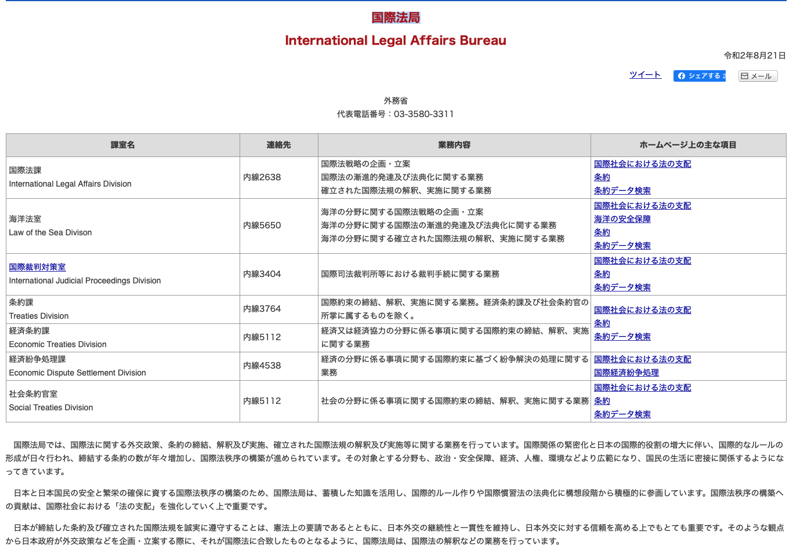

政治学概論Ⅱ ＃8 国際政治学（6）
国際法
![]()
2025年2月5日
キーワード
キーワード
- 国際法
- 法源
- 正統性
- 二元論
授業の感想
授業の感想 > 国際政治を見る視点
秘密文書の取り扱いについて面白さを感じた。私自身秘密文書は永遠に世の中に公開されないものなのだと思っていたので、今回の講義でおよそ30年後になると各国の当時の考え方の違いや報道されていた内容の真相が答え合わせできると知り、とても驚いたから。また秘密文書を読みながら適宜教員となったとき授業に用いることで子どもたちが歴史の事象になんとなく大まかに学習するのではなく実感を持って学習できると思い、指導の可能性を感じたから。（大石）。
思考の単純化のところ ワクチンや能登の地震などで、人類削減や人工地震とかたくさんの陰謀論があった。全部が全部嘘とかおかしな話とか言うつもりはないし、それを言っている人を批判するつもりもないが、中には、客観性を欠いていたり、災害や被害者を利用して話の正当性を持たせようとしているのモノも多いので、非常に腹立たしいものもある。しかし、非公開情報も多いし、人間はステレオタイプやバイアスからは抜け出しにくい。なので、リテラシーは大事だと思うし、自分が教師になったら、生徒にはリテラシーを持って、情報媒体に触れれるような人になってほしいと思うので、それを身に着けれるような授業をしたいと思った。じぶんは、今回の授業で、思考の単純化は特に気をつけないといけないと思ったし、重大な問題だと思った（片山）。
授業の感想 > 国際政治を見る視点
複数国家にまたがる非政治的・経済的諸問題について 環境問題や難民問題、公衆衛生問題などは一国の状況や判断で決めることは難しく、複数の国家にまたがる問題であるが、多くの国が関わっている問題であるからこそ当事者意識が生まれにくく問題解決に時間がかかってしまうということに深く納得できたから。最近でいうとトランプがＷＨＯを離脱したり、パリ協定の離脱をしたことなどが挙げられるが、世界をリードする国が問題意識を持たずに自国の利益だけを優先してしまうと問題をさらに深刻化させてしまう。しかし、なかなか当事者意識を持てない国が多い。問題を可能な限り深刻化させないためにも、1人1人が問題のことを理解し、国や世界に向けて声をあげることで、問題意識がない国に危機感を与えることが必要であると考えた（藤田）。
ステレオタイプについて 政治家や政党の考えを評価する際には、肯定的な評価でも否定的でも、自分が知っている概念やバイアスの中でしか評価できないことを学んだ。日本では、政治や宗教に対する考えを述べることがタブーとされがちであるが、政治的な問題への興味関心を高めていくためには、教師もある程度意見を主張していくことは重要であると考える。講義全体を通して、教師は意見を述べることを否定的に考えるのではなく、誰であっても自分の中にある概念やバイアスを基に政治を評価していることを伝え、認識させていくことが重要であると感じた（本間）。
授業の感想 > 『存在のない子どもたち』
鑑賞した映画の内容が重要だと思った。映画鑑賞を通して、少女の強制結婚や不法就労ならびに少年の殺人未遂行為など大きな問題が山積している実態が詳細に描かれていたが、世界中、その中でも特に発展途上国ではこのような実態が当然のように内在化している状況に衝撃を受けた。だからと言って、これらの問題を解決するために国が国内に住む人々全員の戸籍や身辺に関するデータを徹底的に把握し管理することが、かえって一部の人々の今まで何とか繋いできた生命や生活を奪うことになるという深刻な現実が待ち構えている。私は本映画の中でもとりわけ主人公の少年が人を刺した場面が強烈に印象に残っている。その理由はこの事件をきっかけに少年が身分証を持っていない事実や母親が息子と引き離されている事実が公に明るみになったことで、最後に無事少年は身分証を作成し、母親は息子を取り戻すことができたという明るい結末を迎えた。しかし、逆を言えばこれ程までの出来事が起きないと、これらの事実は闇の中に葬られ、一切解決されることなく終わるという実情が当たり前の世の中に愕然としたからである（高橋）。
映画の子どもが身分証を持っていないシーン 国内の法律や社会制度が機能していないわけではないが、その法律や社会制度が広い範囲で用いられていないというシーンが多くあったため。また、最後に子供が育てることができないのであれば子供を産むなと主張するシーンがあったが、国内制度が整っていればあのような発言や考えは出てこなかったのかなと考えた（冨谷）。
国際法
リーディングアサインメント
「国際法には法を強制する機関がないのだから、そもそも高度に遵守されることが期待されていない、という可能性である。」（p.34-35） 国際法に強制力が欠けていることで、実効性が重要視されていないということから、法律のあり方に矛盾が生じていると感じたから。「守られる局面では守られている」という状況で法が成立しているとは言い難いし、たとえ破られたとしても罰則がないことから、守ろうとする意識が芽生えないのではないかと考える。したがって、国際法は単なる約束事や理想に過ぎず、必ず守らなくてはならないというものではないということが、戦争などの深刻的な状況を許してしまうことにつながるのではないかと考える（岩田）。
P20の世界の大多数の国家が当事国であるような多数国間条約と、二カ国だけの二国間条約が性質上同じ存在であると考えることが本当にできるのだろうかという箇所が重要だと思った。多国間条約と二国間条約が混在していることについて、様々な利点や課題があり、条約を国際社会のなかで捉えていく上で重要になると考えたからである。混在する利点としては、国際的な環境保護に関して多国で協力しつつ、安全保障は二国間で調整できるなどの柔軟な協力ができることであると考える。課題としては、それぞれの条約が相反するものとなった場合や、枠組みと合致しない場合に整合性が欠ける可能性があることだと考える。このことから現在の国際社会は、国際的な問題解決の柔軟性と効率性を高めることもあれば、矛盾や摩擦が生じる可能性もある構造になっていると考えた（加藤）。
リーディングアサインメント
国際法を非実効性にする理由は何か（39p）。国際法に強制力がないということは学習してきたが、それがなぜなのかという理由については考えたことがなかったので印象に残った。その理由として、①誰がどこでどのように作るのかが不明確あるいは不統一である、②不明確な「法」を明確にする手続きが不明確である、あるいは確立していない、③法が一応確立しているらしい場合でも、それを執行する手続きや機関が確立していない、④執行権限を与えられた例外的機関には権力制御のメカニズムがなく、国連加盟国の公平性が担保されておらず、正当性や信頼性を伴っていないという理由があることがわかり、納得したから（喜多川）。
「特別法は一般法を破る」（P.20） 「特別法は一般法を破る」という慣習法が存在する限り、一般法は期待されるだけの効力を発揮することはできず、一般法の存在価値に対して疑問を抱いたため。また、一般法がたとえ国際的に破られるべきじゃないとしても法の内容が不明瞭な限り、どの範囲までの行動が制御されるのかも不明瞭となるため、より内容の定まった一般法が現在は必要なのではないかと思った（藤井）。
リーディングアサインメント
ほとんどすべての国々は、ほとんどすべての場合において、ほとんどすべての国際法原則およびほとんどすべての義務を守っている。この文章が面白いと感じたのは、「ほとんどすべて」という表現を繰り返すことで、国際法が完全に遵守されるわけではないが、無視されているわけでもないという微妙な現実を的確に捉えている点にある。国際法はしばしば形骸化していると批判されるが、多くの国が基本的には遵守しているという視点は、国際秩序の安定性と脆弱性の両面を示しており、興味深いと感じた（三島）。
最上敏樹『国際法以後』
ロシアのウクライナ侵略、イスラエルによるパレスチナ占領、自治区ガザへの大規模攻撃。世界は国際法が堂々と破られるさまを見続けてきた。国際法はなぜこれほど無力なのだろう。しかし、国際法の実効性が脆弱なことは以前から明白であったし、そもそも国際法と呼ばれるものの中味も統一的ではない。にもかかわらず、そうした問題が真摯に議論されることはあまりなかった。本書が国際法を「奇妙な法」と呼び、国際法学を「奇妙な学問」と呼ぶのはそのためである。 とはいえ、国際法学の内部で国際法の批判的検討が皆無だったわけではない。それはマルティ・コスケニエミ、アンソニー・カーティ、ロザリン・ヒギンズ、デイヴィッド・ケネディらによって担われてきた。本書では、こうした研究者の議論を整理・検討し、その成果を糧とすることで、既存の国際法の〈後〉に来るべきものについて、筆者独自の展望を切り拓いている。 実効性なき国際法の構造的問題は、これ以上看過できないところまで来ている。国際法学の内部で批判が行われるだけでは不十分だろう。国際法の再構築は、決して法の専門家だけに委ねられるべき事柄ではないのである（公式サイト）。
最上敏樹『国際法以後』
一読して明らかなように、本書はそのしきたりに従っていない。部分的には従った個所もあるが、この狭い枠組みに自閉していてはならないというのが基本的問題意識だったから、しきたりにも安易に従うことはできなかった。それは国際法を否定する営みではない。国際法規範の存在意義（あるいは必要性）は認めつつ、現存する国際法規範は本当に実効的なのかという問いに発し、実効性に疑義があるならそれを問い直さない学問について自省する。そういう動機から本書は書かれた（最上敏樹 (2024), あとがき）1）。
むろん原点は暴力に対抗するものとしての法規範への信頼であり、法の支配の確立を目ざす価値観である。その意味では「国際法」をぜひともよくしなければならない。問題は、「よくする」ということが何を意味するのかである。世界観の問題として、これまでも非常によく機能している・満足すべき程度には機能していると認識する立場もあるだろう。しかし、なぜ暴力や貧困や人権侵害など、これほどの国際的難題を前にして国際法は機能しないのだろうと（素人的に）疑問を抱き、それを突きつめようとするなら、まずは実効性の欠如を認めるほかない。そしてさらに、実効性を高めるにはどうするか、どうしても高める可能性がないのなら代案はないか、等々を考えることになるだろう。こうして本書の非専門家的作業が始まった（同上）。
国際法を学ぶ意味
国際法への疑念
- 国際法は理想に過ぎない；国際社会は力がすべて
- そもそも国際法は「法」なのか？
国際法学の必要性
〔国際法は「法」かではなく〕「法的思考が、国際関係を把握し、統御するための「道具」として有効であるか否か」（西平等 (2011), p.262）
- ➡ 学者のみならず、各国の政府（ロシアを含む）、市民団体が、自らの実践の正統性を訴えるために国際法を利用しているという事実こそ重要
国際法の正統性
⑴ 現代の地球的規模の正統性あり
- 合法性；正統性の流動性（発展的解釈）
- 例：アパルトヘイト体制：主権論に基づく肯定から、人権論に基づく批判へ（大沼保昭 (2011), p.9）
- Cf. 「慰安婦問題」
- 国際人権法への応答責任あり（岩月直樹 (2016), p.333）
- 「過去の不正義」と「現在の責任」
- 国際人権法への応答責任あり（岩月直樹 (2016), p.333）
国際法の正統性
⑵ 国際法の正統性の由来
1) 法源
- 法源：「法」を知るための情報源の特定
- 形式的法源：
- 条約：当事者間の明確な合意
- 慣習国際法（不文法）：歴史的な慣習に基づく緩やかな国際合意 1
- 実質的法源：判例；学説；決議；宣言；未発効条約；条約採択会議の作業記録・報告書 2 3 4
- ➡ 地球的規模であればあるほど、正統性が高い
- ➡ 判例は各国の条約解釈に影響
国際法の正統性 > 慣習国際法
いま、「法諺または慣習法」と述べ、「法思想あるいは法規則」と述べた。ずいぶん曖昧な言い方である。いったいそれは法/規則なのか、格言/思想にすぎないものなのか。だがそうした曖昧さは国際法の隅々に染みついていて、たとえばそもそも国際法世界における慣習法（慣習国際法）とは何か、ということさえはっきりとは指定しきれないのだ。どんな事柄でもすべての国々が加盟する成文の法、 すなわち条約に成形できるわけではなく（例温室効果ガスの排出制限を期限つきで義務づける条約）、条約を作っても一定の国々は参加する見こみが乏しい場合（例 核兵器禁止条約）も多いのが国際社会の現実である。してみれば、最小限の法秩序を維持するためには、多少不確定でも「慣習的に法とみなしうるもの」が存在するのは便利ではあるだろう。国際法規範（とみなされるもの）の多くは、そういう不文のルールとして使われてきた（と言われる）最上敏樹 (2024), p.21。
国際法の正統性 > 国際法の正統性の由来
2) 事例：世界人権宣言
世界人権宣言が慣習国際法化しているか否かはとくに国際法が裁判規範として機能するが否かという意味で重要だが、世界人権宣言の意義はそうした国際法の技術的な面にかぎられるものではない。国際法をふくむ国際規範文書の重要な役割のひとつは、多様で異質な国がかろうじてみとめる国際社会の数すくない共通の価値を公に宣明し、人々の心に規範意識として定着させ、利害と価値観を異にする諸国の行動を共通の目的に収斂させるのを助けることにある（大沼保昭 (2018), pp.210–211）
国際法の正統性 > 国際法の正統性の由来
3) 適用範囲：
- 条約：締結国のみ
- 慣習国際法：すべての国々
まさにその性質上、国際社会のすべての構成国に対して等しく効力をもたなければならず、自己の都合のために任意にいずれかの国によって一方的に排除しえないものである（北海大陸棚事件ICJ判決、1969年）
国際法は法か：国際法の法的性質
- 前提：国際秩序の分権性
⑴ 国際社会
- 国家を拘束する法規則を組織的に定立する立法機関なし
- 法の拘束力は国家間の合意に由来
- 「合意は拘束する」pacta sunt servanda
- 国際法にもとづく合意秩序
- ➡ 合意しない場合、国家はその規則に拘束されず
- ➡ 一度、締結した合意から離脱も可能1
国際法は法か > 国際社会
例：「国連女子差別撤廃委、日本に皇室典範の改正を勧告」（『読売新聞』2024年10月30日）
国連女子差別撤廃委員会 ＝1979年の国連総会で採択された「女子差別撤廃条約」に基づき、82年に設置された組織。弁護士や人権の専門家などで構成され、女性差別に関連する課題について改善点の提案や勧告を行っている。
- 日本は1985年に同条約を批准しているため、同委員会の勧告を受ける義務を負う（勧告にもとづき改善する義務は負わない）
例：国立国会図書館（2013）「わが国が未批准の国際条約一覧」
国際法は法か：国際法の法的性質
⑵ 紛争処理制度
- 国際社会：紛争の法的解決を最終的に担保する裁判制度なし
- 国際司法裁判所（ICJ）1 2；国際刑事裁判所（ICC）3 4 5；常設仲裁裁判所
- 紛争当事国の合意が必要
- ICJ加盟国：73カ国（国連加盟国193カ国）
- 国際司法裁判所（ICJ）1 2；国際刑事裁判所（ICC）3 4 5；常設仲裁裁判所
国際法は法か：国際法の法的性質
⑶ 国際行政
- 国際社会における法秩序を維持する国際行政も未発達
- 各国の国内行政の主権的統治機能に多くを委ねる
- 例外：国際河川委員会
- 国際基準の設定；監督
- ➡ 実施主体は主権国家（国際基準を受けて、国内法の基準を調整）
⑷ 国際法と個人
- 国際法：国家の権利義務を規律する法
- 個人は法主体ではない
国際法における領域性原理
⑴ 領域的法としての国際法
- 領土；領空；領海
- 主権国家の管轄権をそれぞれ規定
- 管轄権の衝突による紛争を防ぐ
⑵ 機能的法としての国際法
- 背景：グローバル化の進展
- 産業社会；国際相互依存の緊密化；犯罪の国際化；資源保存；国際環境保護
- ➡ 国家管轄権を領域外に伸ばすことを認める
- 例：排他的経済水域制度；大陸棚制度
- 特定の資源に限り沿岸国の管轄権を機能的に拡大
- 領海と区別された概念
- 例：ラムサール条約
国際法と国内法
国際法に抵触する国内法は有効か
Cf. 外務省国際法局
国際法と国内法
- 出典：外務省国際法局
国際法と国内法
⑴ 近年の条約の傾向
- 国民の権利義務に直接・間接に影響を及ぼす内容の規定の増加
国際法と国内法
⑵ 事例：ハーグ条約
- ハーグ条約（国際的な子の奪取の民事上の側面に関する条約）とハーグ条約国内実施法
国境を越えた子の連れ去りについて引き渡しのルールを定めた「ハーグ条約」では、一方的に子が海外に連れ去られた場合、元の居住国へ引き渡すことを規定する。訴状では、日本もハーグ条約に加盟しているのに、「国内では同様の規定がない」と主張（「子の連れ去り巡り国を提訴」『朝日新聞』2020年2月27日）。
国際結婚の問題に詳しい石井真紀子弁護士の話 記事にある女性のようなケースは国際結婚では決して珍しくない。こういう相談を受けると切ないが、日本は（国境を越えて連れ去られた子の取り扱いを定めた）ハーグ条約に加盟しているので、例外事由に当たらない限り、現地の裁判所で良い判決をもらうしか方法はない（「幼い息子と日本に帰りたい 「父親の許可は？」と空港でたびたび拘束」『朝日新聞』2022年12月31日]）。
国際法と国内法
⑶ 国際法と国内法の関係
1) 一元論
- 国内法優位説：国際法は国家の公法に留まる
- 国際法優位説：上位規範である国際法に抵触する国内法は無効
- ➡国際法にあわせて国内法を調整する実践を説明できず
国際法と国内法
2) 二元論
- 国際法と国内法を別個の体系と理解
- 国際法上の義務を損なう国内法を許容（国内的に有効）
- ➡ 理論的には妥当だが、急増する国内法の義務づけに対応できず（後述）
- 調整義務
- 国内法基準と国内法の差異が国際義務違反とならないよう、国内法の手続きにより調整
- 条約により調整を義務づける例 - 国際犯罪防止を処罰するための国内措置 - ただし、ほとんどの条約は、締結国の裁量を認める
国際法と国内法 > 国際法と国内法の関係 > 二元論
- 調整方法
- 編入（一般的受容）；変型
- 日本国憲法：編入方式
日本国が締結した条約及び確立された国際法規は、これを誠実に遵守することを必要とする（日本国憲法第98条2項）
- 条約締結とともに、必要な法令改正を実施する必要あり
- 例：ハーグ条約
- ハーグ条約実施法
- 「民事執行法及び国際的な子の奪取の民事上の側面に関する条約の実施に関する法律の一部を改正する法律」
国際法と集団的自衛権
- 集団的自衛権（国連憲章第51条）
- ただし構成要件を定めず
- 複数の解釈を生む
- ただし構成要件を定めず
- 国際司法裁判所（ICJ）「ニカラグア事件判決」（1986年）
- ICJ：アメリカによるニカラグラ（中南米）反政府軍への武器輸出を集団的自衛権とは認めず
- 構成要件：
- 攻撃の犠牲となった国家が武力攻撃を受けたことを自ら宣言する
- 当該国家からの要請
国際法と集団的自衛権
- 大国：国連安保理を軽視可能
- ただし、国際的正統性を失うという代償を払う
- 例：イラク戦争
- ➡ 国際的正統性付与機関としての国連
- 国連憲章：多国間条約の当事国
- 法的拘束力あり
宿題
宿題
- 授業の感想
対面授業の際は、各コマではなく、一日の授業うちで１つのトピックについて書いて下さい
- リーディングアサインメント
- レポート課題
内容､期日については「提出物（提出先）」を参照